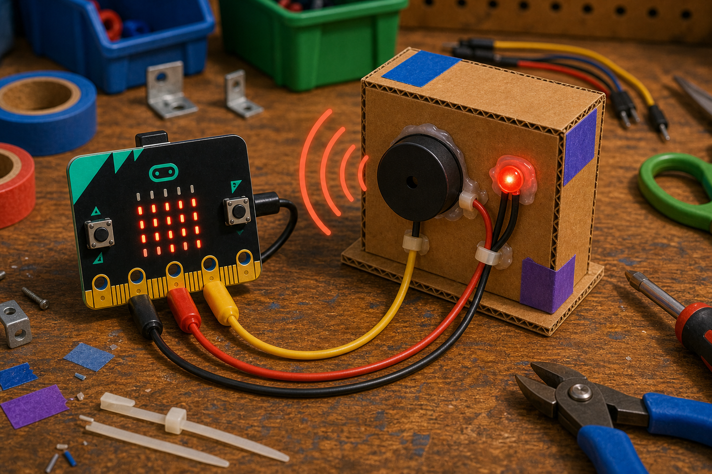
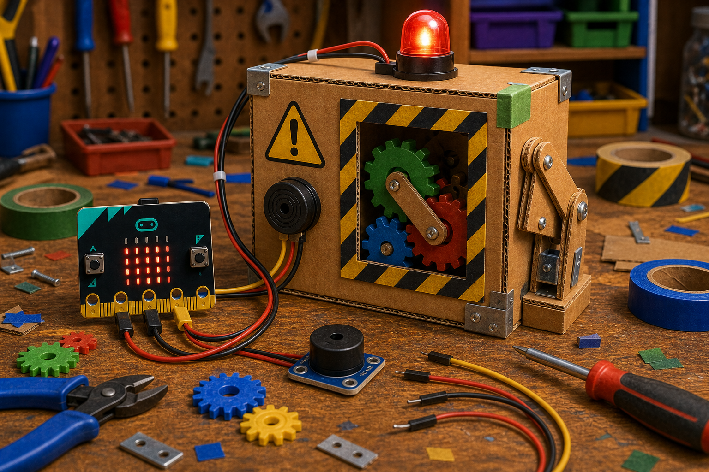

Sound alert
DetectProgram needs to alert
→
DecideUser must hear it now
→
DoBeep the buzzer
A piezo buzzer is a small part that makes a buzz or beep when your code turns it on.
It turns electrical energy into vibration, which makes a sound you can hear without a screen or lights.
With a micro:bit, you play tones through a pin connected to the buzzer.


import music
from microbit import *
music.pitch(440, 500, pin0)pins.analogSetPitchPin(AnalogPin.P0)
music.playTone(262, music.beat(BeatFraction.Whole))music.pitch() or music.play() for tunes.